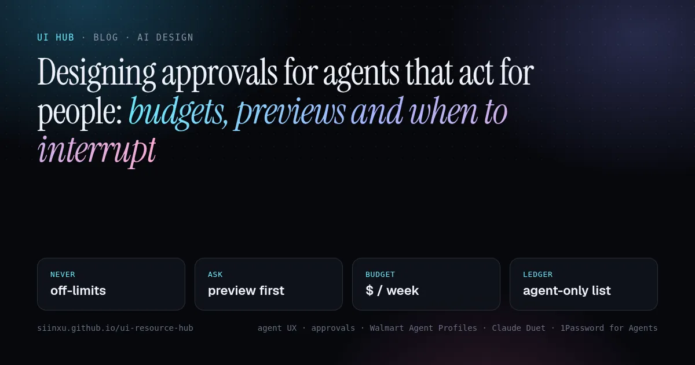
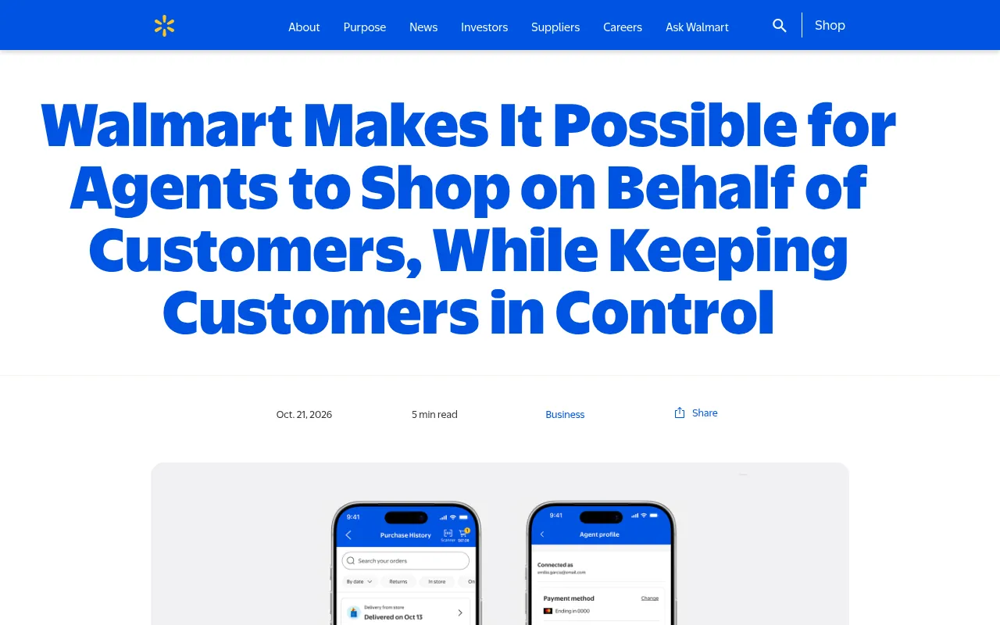
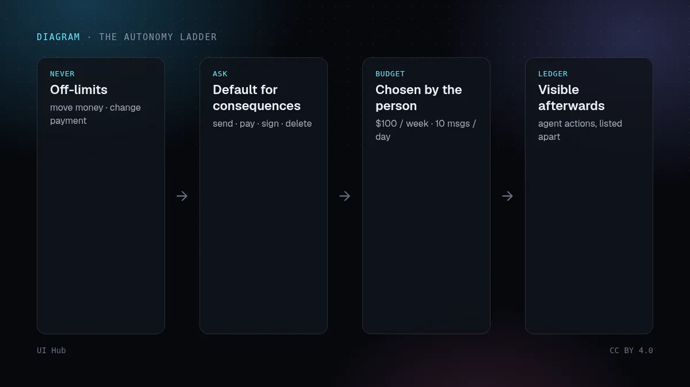
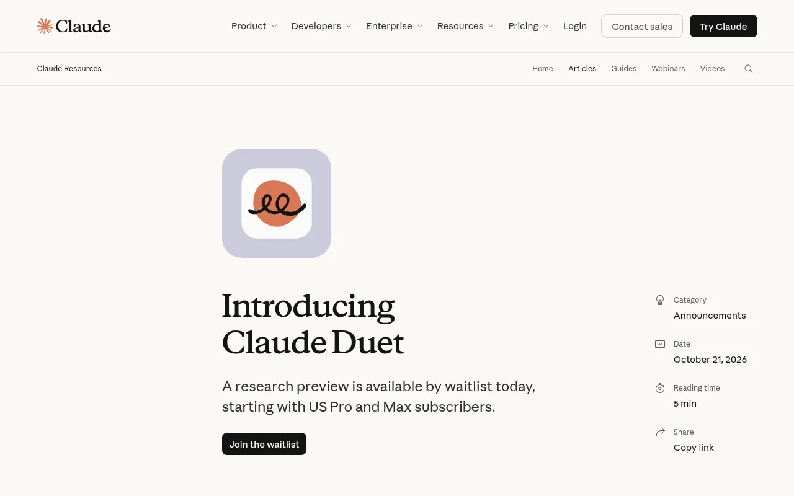

Designing approvals for agents that act for people: budgets, previews and when to interrupt人の代わりに動くエージェントの承認設計：予算、プレビュー、そして割り込むタイミング사람 대신 일하는 에이전트의 승인 설계: 예산, 미리보기, 그리고 끼어들 때Mereka bentuk kelulusan untuk ejen yang bertindak bagi pihak orang: bajet, pratonton dan bila perlu menggangguThiết kế phê duyệt cho agent làm thay người dùng: ngân sách, xem trước và khi nào nên làm phiềnConcevoir les validations des agents qui agissent pour nous : budgets, aperçus et moment d’interrompreDiseñar aprobaciones para agentes que actúan por las personas: presupuestos, vistas previas y cuándo interrumpirFreigaben für Agents gestalten, die für Menschen handeln: Budgets, Vorschauen und wann man stört
In one week Walmart announced Agent Profiles with spending limits, Anthropic opened Claude Duet, which asks before it sends, pays, signs or deletes, and 1Password shipped approvals for agent sign-ins. Together they sketch a shared pattern for agent permission UI: what each one shipped, our take, and a checklist for your own product.1週間のうちに、Walmartは支出上限付きのAgent Profilesを発表し、Anthropicは送信・支払い・署名・削除の前に必ず確認するClaude Duetを公開し、1Passwordはエージェントのサインイン承認を出した。3つを並べるとエージェント権限UIの共通パターンが見える。各社の内容、私たちの見解、自社プロダクト用チェックリスト。일주일 사이에 Walmart는 지출 한도가 있는 Agent Profiles를 발표했고, Anthropic은 보내기·결제·서명·삭제 전에 먼저 묻는 Claude Duet을 열었으며, 1Password는 에이전트 로그인 승인을 내놓았다. 셋을 합치면 에이전트 권한 UI의 공통 패턴이 보인다. 각자 내놓은 것, 우리의 견해, 내 제품용 체크리스트.Dalam seminggu, Walmart mengumumkan Agent Profiles dengan had perbelanjaan, Anthropic membuka Claude Duet yang bertanya sebelum menghantar, membayar, menandatangani atau memadam, dan 1Password melancarkan kelulusan log masuk ejen. Bersama-sama ia melakar corak UI kebenaran ejen: apa yang dilancarkan, pandangan kami dan senarai semak untuk produk anda.Trong một tuần, Walmart công bố Agent Profiles có hạn mức chi tiêu, Anthropic mở Claude Duet luôn hỏi trước khi gửi, thanh toán, ký hay xoá, và 1Password ra mắt phê duyệt đăng nhập cho agent. Gộp lại, chúng phác ra một mẫu chung cho UI cấp quyền agent: mỗi bên ra mắt gì, nhận định của chúng tôi và checklist cho sản phẩm của bạn.En une semaine, Walmart a annoncé Agent Profiles avec plafonds de dépense, Anthropic a ouvert Claude Duet, qui demande avant d’envoyer, payer, signer ou supprimer, et 1Password a lancé la validation des connexions d’agents. Ensemble, ils dessinent un modèle commun d’UI de permissions : ce que chacun a lancé, notre avis et une checklist pour votre produit.En una semana, Walmart anunció Agent Profiles con límites de gasto, Anthropic abrió Claude Duet, que pregunta antes de enviar, pagar, firmar o borrar, y 1Password lanzó aprobaciones para los inicios de sesión de agentes. Juntos esbozan un patrón común de UI de permisos: qué lanzó cada uno, nuestra opinión y una lista de revisión para tu producto.Innerhalb einer Woche kündigte Walmart Agent Profiles mit Ausgabenlimits an, Anthropic öffnete Claude Duet, das vor Senden, Bezahlen, Unterschreiben oder Löschen fragt, und 1Password brachte Freigaben für Agent-Logins. Zusammen skizzieren sie ein gemeinsames Muster für Agent-Berechtigungs-UI: was jeweils kam, unsere Einschätzung und eine Checkliste für dein Produkt.

本文は英語で表示しています。
본문은 영어로 표시됩니다.
Kandungan dipaparkan dalam bahasa Inggeris.
Nội dung hiển thị bằng tiếng Anh.
Le corps de l’article est en anglais.
El cuerpo del artículo está en inglés.
Der Beitragstext ist auf Englisch.
Most agent interfaces still have one permission model: the agent can do everything the person can, because it signs in as them. That worked while agents mostly read and drafted. It stops working the moment they buy, send and sign. In the week of 21 October three launches, from a retailer, a model lab and a password manager, each shipped a different piece of the same answer. Read together, they are the clearest picture yet of what a permission screen for an agent should look like.

What shipped
- Walmart Agent Profiles (announced 21 October, launching within a month). Today an agent shopping on Walmart signs in with the customer's account, so its orders are mixed in with theirs. Agent Profiles give each agent its own profile inside the account, with its purchases listed separately. By default every agent purchase needs approval; the customer can instead allow spending up to a limit such as $50, $100 or $200, and Walmart says it may still ask for approval inside that limit. Profiles can be turned off or deleted at any time. Under the new terms, agents never receive card details, cannot add or change payment methods, and may only use the information a task needs. A beta Agent Gateway connects agents over MCP and, in Walmart's example, helps an agent find your usual milk without handing over your whole shopping history.
- Claude Duet (research preview, 21 October). Anthropic's proactive agent sends a morning brief, checks connected apps every few hours rather than continuously, and messages you only when something needs your attention; you can tell it what you want to hear about and how often. It reads, drafts and prepares work on its own, but before it sends a message, makes a payment, signs a document or deletes anything, it shows exactly what it is about to do and waits. Some actions, such as trading securities or moving money between accounts, stay off-limits even with approval, and any connected app can be disconnected. Anthropic says the preview may still misjudge what is urgent and cannot yet show you its browser.
- 1Password for Agents (October). When an agent hits a sign-in form, 1Password shows a prompt naming which agent is asking and suggesting a login; you approve on your own device, and 1Password fills the form without the credential ever reaching the agent. Its Claude integration goes further: there are no standing approvals, so a new agent session means a new prompt, and released credentials expire with the session.

One early hands-on review of Duet, by Claire Vo and summarised in the FocusHeron AI and Designers newsletter, adds the human side: a proactive agent needs a deliberate rule for when it may interrupt, and slow responses quickly erode the willingness to work with it in real time.
Our take
The three launches agree on more than they differ, and the agreement is a design pattern rather than a security feature. Autonomy is not one switch; it is a setting per action type, with four rungs. Some actions are never allowed. Consequential ones are asked every time by default. Routine ones can run within a budget the person chose. Everything the agent did is visible afterwards in its own ledger, separate from what the person did. The approval itself has to be a preview of the exact action, not a generic "Allow?" dialog: Duet's "shows you exactly what it is about to do" and 1Password's "which agent is asking, for which login" are the two halves of a good approval card.
The quieter lesson is about attention. A permission model that asks for everything trains people to tap Approve without reading, which is worse than no approval at all. Duet's few-hours check-in and per-topic notification settings, and Walmart's budget tier, both exist to reduce how often the person is asked, so that the remaining questions get read. If your product adds agent actions, design the interruption budget at the same time as the spending budget.
Checklist: an approval UI for agent actions
- Give each agent its own identity. Show its name and icon on every request and on every action in history, never the person's avatar.
- Classify actions before you design screens. Read, draft, act within budget, act with approval, never. Write the list down; it is your permission spec.
- Default consequential actions to "ask". Sending, paying, signing, deleting and changing account settings start in the ask tier; the person can loosen it later, per agent.
- Make the approval card a preview. Show the exact recipient and text, item and price, or file and change, plus who is asking and why. Offer Approve, Edit and Deny, and make Deny as easy to hit as Approve.
- Budgets in the person's units. Money per purchase or per week, messages per day, or recipients outside the team. Show the remaining budget on the card and in settings.
- Keep a separate ledger. Agent actions get their own list with filters, an undo or return path where one exists, and a one-tap way to pause or remove the agent.
- Set an interruption rule. Batch low-stakes items into a brief, interrupt only for blocked or time-critical work, and let people choose topics and frequency.
- No standing secrets. Never paste credentials into the agent's context; hand sign-in to a credential manager and expire access with the session.
- Make the approval accessible. A blocking approval is an
alertdialogwith a clear title, focus on the safest option, and text a screen reader can read in full.
# agent-permissions.yml: a starting spec
agent: "Shopping assistant"
never: [change_payment_method, move_money, trade]
ask: [send_message, purchase_over_budget, sign, delete]
budget: { purchase: "$100 / week", messages: "10 / day" }
auto: [read, search, draft, add_to_cart]
notify: { brief: "08:00", interrupt: [blocked, deadline_today] }
ledger: separate_from_owner
session: { credentials: via_password_manager, expire: on_end }
How UI Hub helps
The building blocks for this UI already exist. Our post on shadcn Trace and AI Elements covers the Confirmation and Tool patterns that an approval card can be built from, and accessibility in AI-generated UI covers focus and dialog roles. For making the agent itself follow your rules while it builds screens like these, see linting agents onto your design system.
Most agent interfaces still have one permission model: the agent can do everything the person can, because it signs in as them. That worked while agents mostly read and drafted. It stops working the moment they buy, send and sign. In the week of 21 October three launches, from a retailer, a model lab and a password manager, each shipped a different piece of the same answer. Read together, they are the clearest picture yet of what a permission screen for an agent should look like.
What shipped
- Walmart Agent Profiles (announced 21 October, launching within a month). Today an agent shopping on Walmart signs in with the customer's account, so its orders are mixed in with theirs. Agent Profiles give each agent its own profile inside the account, with its purchases listed separately. By default every agent purchase needs approval; the customer can instead allow spending up to a limit such as $50, $100 or $200, and Walmart says it may still ask for approval inside that limit. Profiles can be turned off or deleted at any time. Under the new terms, agents never receive card details, cannot add or change payment methods, and may only use the information a task needs. A beta Agent Gateway connects agents over MCP and, in Walmart's example, helps an agent find your usual milk without handing over your whole shopping history.
- Claude Duet (research preview, 21 October). Anthropic's proactive agent sends a morning brief, checks connected apps every few hours rather than continuously, and messages you only when something needs your attention; you can tell it what you want to hear about and how often. It reads, drafts and prepares work on its own, but before it sends a message, makes a payment, signs a document or deletes anything, it shows exactly what it is about to do and waits. Some actions, such as trading securities or moving money between accounts, stay off-limits even with approval, and any connected app can be disconnected. Anthropic says the preview may still misjudge what is urgent and cannot yet show you its browser.
- 1Password for Agents (October). When an agent hits a sign-in form, 1Password shows a prompt naming which agent is asking and suggesting a login; you approve on your own device, and 1Password fills the form without the credential ever reaching the agent. Its Claude integration goes further: there are no standing approvals, so a new agent session means a new prompt, and released credentials expire with the session.
One early hands-on review of Duet, by Claire Vo and summarised in the FocusHeron AI and Designers newsletter, adds the human side: a proactive agent needs a deliberate rule for when it may interrupt, and slow responses quickly erode the willingness to work with it in real time.
Our take
The three launches agree on more than they differ, and the agreement is a design pattern rather than a security feature. Autonomy is not one switch; it is a setting per action type, with four rungs. Some actions are never allowed. Consequential ones are asked every time by default. Routine ones can run within a budget the person chose. Everything the agent did is visible afterwards in its own ledger, separate from what the person did. The approval itself has to be a preview of the exact action, not a generic "Allow?" dialog: Duet's "shows you exactly what it is about to do" and 1Password's "which agent is asking, for which login" are the two halves of a good approval card.
The quieter lesson is about attention. A permission model that asks for everything trains people to tap Approve without reading, which is worse than no approval at all. Duet's few-hours check-in and per-topic notification settings, and Walmart's budget tier, both exist to reduce how often the person is asked, so that the remaining questions get read. If your product adds agent actions, design the interruption budget at the same time as the spending budget.
Checklist: an approval UI for agent actions
- Give each agent its own identity. Show its name and icon on every request and on every action in history, never the person's avatar.
- Classify actions before you design screens. Read, draft, act within budget, act with approval, never. Write the list down; it is your permission spec.
- Default consequential actions to "ask". Sending, paying, signing, deleting and changing account settings start in the ask tier; the person can loosen it later, per agent.
- Make the approval card a preview. Show the exact recipient and text, item and price, or file and change, plus who is asking and why. Offer Approve, Edit and Deny, and make Deny as easy to hit as Approve.
- Budgets in the person's units. Money per purchase or per week, messages per day, or recipients outside the team. Show the remaining budget on the card and in settings.
- Keep a separate ledger. Agent actions get their own list with filters, an undo or return path where one exists, and a one-tap way to pause or remove the agent.
- Set an interruption rule. Batch low-stakes items into a brief, interrupt only for blocked or time-critical work, and let people choose topics and frequency.
- No standing secrets. Never paste credentials into the agent's context; hand sign-in to a credential manager and expire access with the session.
- Make the approval accessible. A blocking approval is an
alertdialogwith a clear title, focus on the safest option, and text a screen reader can read in full.
# agent-permissions.yml: a starting spec
agent: "Shopping assistant"
never: [change_payment_method, move_money, trade]
ask: [send_message, purchase_over_budget, sign, delete]
budget: { purchase: "$100 / week", messages: "10 / day" }
auto: [read, search, draft, add_to_cart]
notify: { brief: "08:00", interrupt: [blocked, deadline_today] }
ledger: separate_from_owner
session: { credentials: via_password_manager, expire: on_end }How UI Hub helps
The building blocks for this UI already exist. Our post on shadcn Trace and AI Elements covers the Confirmation and Tool patterns that an approval card can be built from, and accessibility in AI-generated UI covers focus and dialog roles. For making the agent itself follow your rules while it builds screens like these, see linting agents onto your design system.
AI promptAIプロンプトAI 프롬프트Prompt AIPrompt cho AIPrompt IAPrompt de IAKI-Prompt
Paste this into Claude, Cursor, v0 or another assistant to apply this post to your own project. Replace the parts in angle brackets.Claude・Cursor・v0 などのAIアシスタントに貼り付けると、この記事の方法をあなたのプロジェクトに適用できます。山括弧の部分は自分の内容に置き換えてください。Claude, Cursor, v0 같은 AI 도우미에 붙여 넣으면 이 글의 방법을 내 프로젝트에 적용할 수 있습니다. 꺾쇠괄호 안은 내 내용으로 바꾸세요.Tampal ke Claude, Cursor, v0 atau pembantu lain untuk menggunakan kaedah artikel ini pada projek anda. Gantikan bahagian dalam kurungan sudut.Dán vào Claude, Cursor, v0 hoặc trợ lý khác để áp dụng bài này cho dự án của bạn. Thay phần trong dấu ngoặc nhọn bằng nội dung của bạn.Collez-le dans Claude, Cursor, v0 ou un autre assistant pour appliquer cet article à votre projet. Remplacez les parties entre chevrons.Pégalo en Claude, Cursor, v0 u otro asistente para aplicar este artículo a tu proyecto. Sustituye lo que está entre corchetes angulares.In Claude, Cursor, v0 oder einen anderen Assistenten einfügen, um diesen Beitrag auf dein Projekt anzuwenden. Teile in spitzen Klammern ersetzen.
You are a senior UI engineer. Apply the article “Designing approvals for agents that act for people: budgets, previews and when to interrupt” (https://ui.incidental.site/blog/agent-approval-ui-budgets-interruptions/) to my project.
Key idea: In one week Walmart announced Agent Profiles with spending limits, Anthropic opened Claude Duet, which asks before it sends, pays, signs or deletes, and 1Password shipped approvals for agent sign-ins. Together they sketch a shared pattern for agent permission UI: what each one shipped, our take, and a checklist for your own product.
Steps:
1. Read the article and turn its advice into a numbered checklist of concrete, checkable rules.
2. Audit <my page / component / repo> against that checklist; mark each rule PASS or FAIL with file and line.
3. Fix the FAIL items in small batches, using my existing tokens and components. Do not invent APIs; follow the official docs the article links to.
4. Finish with a short list of open questions and anything you could not verify.あなたはシニアUIエンジニアです。記事「人の代わりに動くエージェントの承認設計：予算、プレビュー、そして割り込むタイミング」（https://ui.incidental.site/blog/agent-approval-ui-budgets-interruptions/）の方法を私のプロジェクトに適用してください。
要点：1週間のうちに、Walmartは支出上限付きのAgent Profilesを発表し、Anthropicは送信・支払い・署名・削除の前に必ず確認するClaude Duetを公開し、1Passwordはエージェントのサインイン承認を出した。3つを並べるとエージェント権限UIの共通パターンが見える。各社の内容、私たちの見解、自社プロダクト用チェックリスト。
手順：
1. 記事を読み、助言を具体的で確認可能な番号付きチェックリストにする。
2. そのチェックリストで <私のページ / コンポーネント / リポジトリ> を監査し、各項目を合格／不合格で示し、ファイルと行番号を書く。
3. 不合格の項目を、既存のトークンとコンポーネントを使って少しずつ修正する。APIを捏造せず、記事がリンクする公式ドキュメントに従う。
4. 最後に未解決の質問と検証できなかった点を挙げる。당신은 시니어 UI 엔지니어입니다. 글 “사람 대신 일하는 에이전트의 승인 설계: 예산, 미리보기, 그리고 끼어들 때”(https://ui.incidental.site/blog/agent-approval-ui-budgets-interruptions/)의 방법을 내 프로젝트에 적용해 주세요.
핵심: 일주일 사이에 Walmart는 지출 한도가 있는 Agent Profiles를 발표했고, Anthropic은 보내기·결제·서명·삭제 전에 먼저 묻는 Claude Duet을 열었으며, 1Password는 에이전트 로그인 승인을 내놓았다. 셋을 합치면 에이전트 권한 UI의 공통 패턴이 보인다. 각자 내놓은 것, 우리의 견해, 내 제품용 체크리스트.
단계:
1. 글을 읽고 조언을 구체적이고 확인 가능한 번호 목록으로 정리한다.
2. 그 목록으로 <내 페이지 / 컴포넌트 / 저장소>를 점검하고, 항목마다 통과/실패와 파일·줄 번호를 적는다.
3. 실패 항목을 기존 토큰과 컴포넌트로 조금씩 고친다. API를 지어내지 말고 글에 링크된 공식 문서를 따른다.
4. 마지막으로 남은 질문과 확인하지 못한 내용을 정리한다.Anda jurutera UI kanan. Gunakan kaedah artikel “Mereka bentuk kelulusan untuk ejen yang bertindak bagi pihak orang: bajet, pratonton dan bila perlu mengganggu” (https://ui.incidental.site/blog/agent-approval-ui-budgets-interruptions/) pada projek saya.
Idea utama: Dalam seminggu, Walmart mengumumkan Agent Profiles dengan had perbelanjaan, Anthropic membuka Claude Duet yang bertanya sebelum menghantar, membayar, menandatangani atau memadam, dan 1Password melancarkan kelulusan log masuk ejen. Bersama-sama ia melakar corak UI kebenaran ejen: apa yang dilancarkan, pandangan kami dan senarai semak untuk produk anda.
Langkah:
1. Baca artikel dan jadikan nasihatnya senarai semak bernombor yang konkrit dan boleh disemak.
2. Audit <halaman / komponen / repo saya> dengan senarai itu; tandakan setiap peraturan LULUS atau GAGAL dengan fail dan baris.
3. Baiki item GAGAL sedikit demi sedikit menggunakan token dan komponen sedia ada. Jangan reka API; ikut dokumen rasmi yang dipautkan artikel.
4. Akhiri dengan soalan terbuka dan perkara yang tidak dapat disahkan.Bạn là kỹ sư UI cấp cao. Hãy áp dụng bài viết “Thiết kế phê duyệt cho agent làm thay người dùng: ngân sách, xem trước và khi nào nên làm phiền” (https://ui.incidental.site/blog/agent-approval-ui-budgets-interruptions/) cho dự án của tôi.
Ý chính: Trong một tuần, Walmart công bố Agent Profiles có hạn mức chi tiêu, Anthropic mở Claude Duet luôn hỏi trước khi gửi, thanh toán, ký hay xoá, và 1Password ra mắt phê duyệt đăng nhập cho agent. Gộp lại, chúng phác ra một mẫu chung cho UI cấp quyền agent: mỗi bên ra mắt gì, nhận định của chúng tôi và checklist cho sản phẩm của bạn.
Các bước:
1. Đọc bài và biến lời khuyên thành danh sách kiểm tra đánh số, cụ thể, kiểm chứng được.
2. Rà soát <trang / component / repo của tôi> theo danh sách đó; ghi ĐẠT hoặc KHÔNG ĐẠT kèm tệp và dòng.
3. Sửa các mục KHÔNG ĐẠT theo từng đợt nhỏ, dùng token và component sẵn có. Không bịa API; làm theo tài liệu chính thức mà bài viết dẫn tới.
4. Kết thúc bằng các câu hỏi còn mở và những điểm chưa xác minh được.Tu es ingénieur UI senior. Applique l’article « Concevoir les validations des agents qui agissent pour nous : budgets, aperçus et moment d’interrompre » (https://ui.incidental.site/blog/agent-approval-ui-budgets-interruptions/) à mon projet.
Idée clé : En une semaine, Walmart a annoncé Agent Profiles avec plafonds de dépense, Anthropic a ouvert Claude Duet, qui demande avant d’envoyer, payer, signer ou supprimer, et 1Password a lancé la validation des connexions d’agents. Ensemble, ils dessinent un modèle commun d’UI de permissions : ce que chacun a lancé, notre avis et une checklist pour votre produit.
Étapes :
1. Lis l’article et transforme ses conseils en une liste numérotée de règles concrètes et vérifiables.
2. Audite <ma page / mon composant / mon dépôt> avec cette liste ; indique OK ou KO pour chaque règle, avec fichier et ligne.
3. Corrige les points KO par petits lots, avec mes tokens et composants existants. N’invente pas d’API ; suis la documentation officielle citée par l’article.
4. Termine par les questions ouvertes et ce que tu n’as pas pu vérifier.Eres un ingeniero de UI sénior. Aplica el artículo “Diseñar aprobaciones para agentes que actúan por las personas: presupuestos, vistas previas y cuándo interrumpir” (https://ui.incidental.site/blog/agent-approval-ui-budgets-interruptions/) a mi proyecto.
Idea clave: En una semana, Walmart anunció Agent Profiles con límites de gasto, Anthropic abrió Claude Duet, que pregunta antes de enviar, pagar, firmar o borrar, y 1Password lanzó aprobaciones para los inicios de sesión de agentes. Juntos esbozan un patrón común de UI de permisos: qué lanzó cada uno, nuestra opinión y una lista de revisión para tu producto.
Pasos:
1. Lee el artículo y convierte sus consejos en una lista numerada de reglas concretas y comprobables.
2. Audita <mi página / componente / repositorio> con esa lista; marca cada regla como CUMPLE o NO CUMPLE con archivo y línea.
3. Corrige los puntos que no cumplen en lotes pequeños, usando mis tokens y componentes actuales. No inventes APIs; sigue la documentación oficial que enlaza el artículo.
4. Termina con las preguntas abiertas y lo que no pudiste verificar.Du bist Senior-UI-Engineer. Wende den Artikel „Freigaben für Agents gestalten, die für Menschen handeln: Budgets, Vorschauen und wann man stört“ (https://ui.incidental.site/blog/agent-approval-ui-budgets-interruptions/) auf mein Projekt an.
Kernidee: Innerhalb einer Woche kündigte Walmart Agent Profiles mit Ausgabenlimits an, Anthropic öffnete Claude Duet, das vor Senden, Bezahlen, Unterschreiben oder Löschen fragt, und 1Password brachte Freigaben für Agent-Logins. Zusammen skizzieren sie ein gemeinsames Muster für Agent-Berechtigungs-UI: was jeweils kam, unsere Einschätzung und eine Checkliste für dein Produkt.
Schritte:
1. Lies den Artikel und mach aus den Empfehlungen eine nummerierte Liste konkreter, prüfbarer Regeln.
2. Prüfe <meine Seite / Komponente / mein Repo> anhand dieser Liste; markiere jede Regel mit OK oder FEHLT, mit Datei und Zeile.
3. Behebe die fehlenden Punkte in kleinen Schritten mit meinen vorhandenen Tokens und Komponenten. Erfinde keine APIs; folge der offiziellen Doku, die der Artikel verlinkt.
4. Schließe mit offenen Fragen und dem, was du nicht prüfen konntest.References参考文献참고 자료RujukanNguồn tham khảoRéférencesReferenciasQuellen
- Making it possible for agents to shop on behalf of customers — Walmart
- Walmart is inviting AI agents to shop for you — The Verge
- Walmart will let AI agents shop for you, with their own spending limits — The Next Web
- Walmart AI agent shopping: new controls and spending limits — Digital Commerce 360
- Introducing Claude Duet — Anthropic
- Get started with Claude Duet — Claude Help Center
- Anthropic announces preview of Claude Duet — Ashley Capoot, CNBC
- Use 1Password to sign in to sites with supported agents — 1Password Support
- 1Password for Agents launches as the trust layer for personal AI agents — 1Password
- About the security of 1Password for Claude — 1Password Support
- AI and Designers, issue 2 (25 October 2026) — FocusHeron
- AI Elements — shadcn/ui
- Alert and message dialogs pattern — W3C WAI-ARIA APG
Related posts関連記事관련 글Artikel berkaitanBài liên quanArticles liésArtículos relacionadosÄhnliche Beiträge

Teaching agents taste: how design skills de-slop AI interfacesエージェントにセンスを教える：デザインスキルでAIっぽさを消す에이전트에게 취향 가르치기: 디자인 스킬로 AI 티 없애기Mengajar ejen cita rasa: kemahiran reka bentuk membuang rupa "AI"Dạy agent gu thẩm mỹ: skill thiết kế xoá "mùi AI"Apprendre le goût aux agents : les skills de design contre l'UI génériqueEnseñar criterio a los agentes: skills de diseño contra la UI genéricaAgenten Geschmack beibringen: Design-Skills gegen generische KI-UIs
Skills like frontend-design, taste-skill and impeccable package opinions as files agents load on demand. Here is how to combine them.frontend-design、taste-skill、impeccableなどは設計の意見をファイル化したもの。組み合わせ方を解説。frontend-design, taste-skill, impeccable 같은 스킬은 디자인 관점을 파일로 담는다. 조합법.Kemahiran seperti frontend-design, taste-skill dan impeccable membungkus pendapat reka bentuk. Cara menggabungkannya.Các skill như frontend-design, taste-skill, impeccable đóng gói quan điểm thiết kế. Cách kết hợp.frontend-design, taste-skill, impeccable : des opinions de design en fichiers. Comment les combiner.frontend-design, taste-skill, impeccable: opiniones de diseño en archivos. Cómo combinarlas.frontend-design, taste-skill, impeccable: Design-Meinungen als Dateien. So kombiniert man sie.

Design tokens for agents: the file that makes AI output on-brandエージェントのためのデザイントークン에이전트를 위한 디자인 토큰Token reka bentuk untuk ejenDesign token cho agent: file giúp AI ra đúng thương hiệuDes design tokens pour les agentsDesign tokens para agentesDesign Tokens für Agents
A machine-readable token file (the W3C DTCG format) plus a short usage note beats any adjective in a prompt. Structure, naming, and how to hand it to an agent.機械可読なトークン(W3C DTCG)と短い使い方メモはどんな形容詞にも勝る。기계가 읽는 토큰 파일(W3C DTCG)과 짧은 사용법이 어떤 형용사보다 낫다.Fail token boleh dibaca mesin (DTCG) mengatasi kata sifat dalam prompt.File token máy đọc được (DTCG) cùng ghi chú ngắn hơn mọi tính từ trong prompt.Un fichier de tokens lisible par machine (DTCG) vaut mieux que tout adjectif.Un archivo de tokens legible por máquina (DTCG) supera a cualquier adjetivo.Eine maschinenlesbare Token-Datei (DTCG) schlägt jedes Adjektiv.

Design skills for Claude and Cursor: SKILL.md, rules and AGENTS.mdClaudeとCursorのデザインスキル：SKILL.md・rules・AGENTS.mdClaude와 Cursor의 디자인 스킬: SKILL.md, rules, AGENTS.mdKemahiran reka bentuk untuk Claude dan CursorSkill thiết kế cho Claude và Cursor: SKILL.md, rules, AGENTS.mdCompétences design pour Claude et CursorSkills de diseño para Claude y CursorDesign-Skills für Claude und Cursor
Three file formats, one idea: durable instructions an agent loads when relevant. How to write a design skill that changes output, with a template.3つの形式、1つの考え方。出力を変えるデザインスキルの書き方とテンプレート。세 가지 형식, 하나의 아이디어. 출력을 바꾸는 디자인 스킬 작성법과 템플릿.Tiga format fail, satu idea. Cara menulis kemahiran reka bentuk, dengan templat.Ba định dạng, một ý tưởng. Cách viết skill thiết kế thật sự thay đổi kết quả, kèm mẫu.Trois formats, une idée. Comment écrire une compétence design efficace, avec modèle.Tres formatos, una idea. Cómo escribir un skill de diseño eficaz, con plantilla.Drei Formate, eine Idee. So schreibt man einen wirksamen Design-Skill, mit Vorlage.